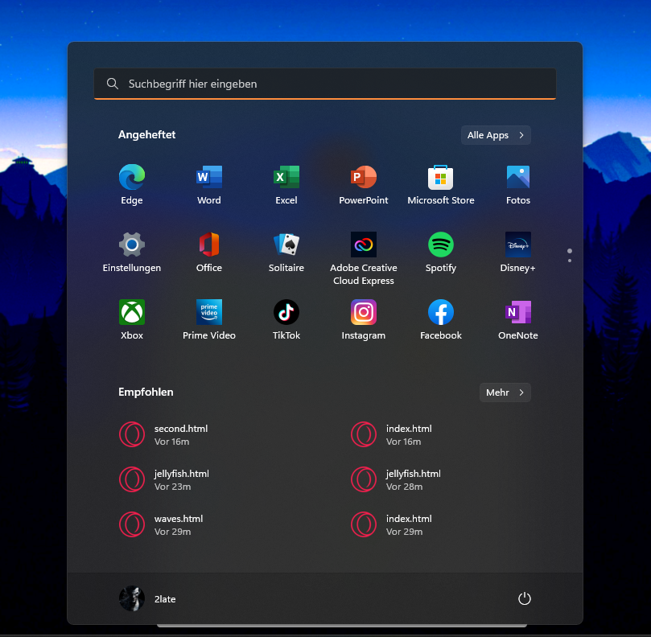

Hey there! Unfortunately, you can only use this site on PC, because the virtual Desktop does not work for mobile!
1:01
Thwensday, March 50
Press Space
Recycle Bin
Edge
This PC
VLC Media Player

00:00
00.00.0000

 Recycle Bin
Recycle Bin
 Edge
Edge
 This PC
This PC
 VLC Media Player
VLC Media Player